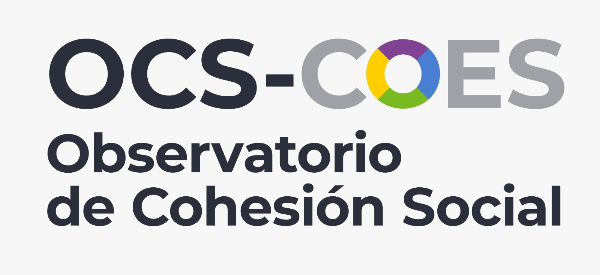
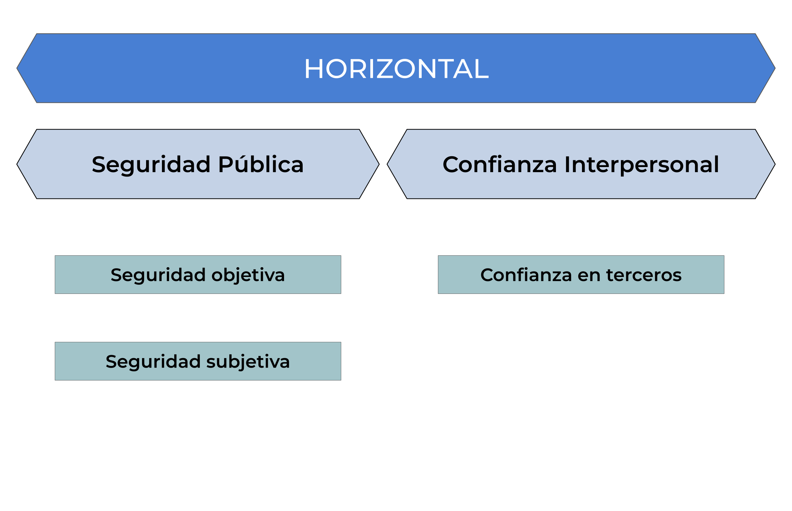
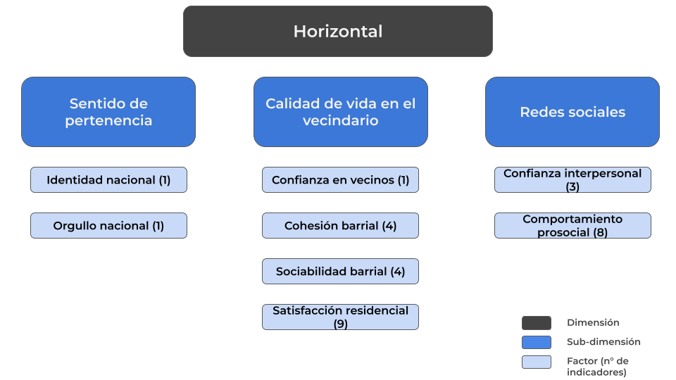
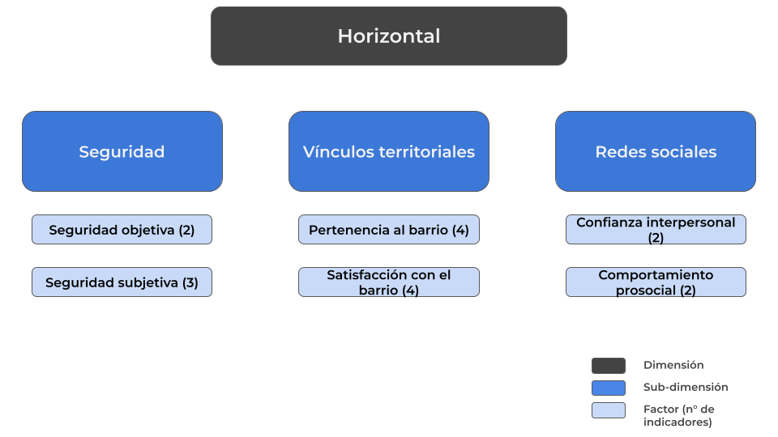

1 Introducción
El presente documento tiene el objetivo de presentar una propuesta teórica y metodológica de medición de la cohesión social en Chile, utilizando los datos del estudio longitudinal ELSOC. Esta propuesta pretende servir, a corto plazo, de insumo para el segundo foro de cohesión social en conjunto con el Centro de Estudios Públicos, mientras que el objetivo a largo plazo es que pueda ser un sustento para el futuro visualizador del Observatorio de Cohesión Social. Considerando lo anterior, en un primer momento este trabajo se dedicará a profundizar en la dimensión horizontal de la cohesión social, y posteriormente se elaborará el apartado correspondiente a la dimensión vertical.
Cambiar el link del OCS al visualizador cuando esté listo
El Centro de Estudios de Conflicto y Cohesión Social (COES) es una iniciativa que nace el año 2014 con la intención de estudiar desde una perspectiva multidimensional los factores que agudizan el conflicto social y aquellos que fortalecen la cohesión social en Chile. COES se presenta como un centro que busca el vínculo entre ciencia, Estado y sociedad, proponiendo diagnósticos y soluciones que contribuyan al desarrollo y bienestar del país.
A partir de la necesidad de generar evidencia empírica sobre cohesión social, desde COES surge el Observatorio de Cohesión Social, un espacio de investigación orientado al análisis de datos mediante la generación de herramientas metodológicas actualizadas y pertinentes. El OCS busca poner a disposición pública los hallazgos provenientes tanto de encuestas nacionales como de comparativa internacional con tal de profundizar en las dinámicas circunscritas en la cohesión social.
La construcción de este nuevo marco de medición tomará como referencia la propuesta de medición de cohesión social en Chile con ELSOC, así como la propuesta de medición de cohesión social en América Latina con LAPOP, en orden de elaborar un insumo que permita comprender y profundizar en los factores asociados a la cohesión social en Chile. El primer trabajo mencionado es uno de los antecedentes principales del actual trabajo, puesto que, a partir de una revisión sistemática de estudios internacionales, busca identificar los principales indicadores que posibilitan la operacionalización y medición de la cohesión social en Chile con los datos de ELSOC. El segundo documento pretende aportar en la medición de la cohesión social pero a un nivel regional, abordando la construcción técnica y metodológica para medir este fenómeno en América Latina.
El desarrollo de este documento estará guiado, primeramente, por la presentación de las dos propuestas ya mencionadas, discutiendo sus principales similitudes y diferencias, en vista de rescatar los mayores aportes de cada una. Posteriormente, se dará a conocer la nueva propuesta en sus dimensiones teórica y metodológica.
2 Marco conceptual
La conceptualización de la cohesión social se inspira de la acepción de Chan et al. (2006), la cual establece dos dimensiones para la cohesión social: Vertical y Horizontal. La primera se enfoca en las relaciones entre los ciudadanos (o sociedad civil) y el Estado y sus instituciones, mientras que la segunda aborda las interacciones sociales entre los individuos.
“La cohesión social es un estado de cosas que concierte tanto a las interacciones verticales como horizontales entre los miembros de la sociedad, caracterizado por un conjunto de actitudes y normas que incluyen la confianza, el sentido de pertenencia y la voluntad de participar y ayudar, así como sus manifestaciones conductuales” (Chan et al., 2006, p. 290).
2.1 Propuesta LAPOP

2.2 Propuesta ELSOC

3 Análisis comparativo
3.1 Diferencias
1) Las propuestas no comparten ningún factor de sus subdimensiones. Si bien ambas integran confianza interpersonal en su medición, ELSOC la considera como un factor de segundo orden, mientras que en la propuesta de LAPOP es un factor de primer orden.
2) Propuesta con ELSOC es mucho más compleja en tanto tiene mayores niveles de granularidad y, consecuentemente, mayor cantidad de factores en comparación con la propuesta de LA, cuya perspectiva es más minimalista.
Esto se expresa en, por ejemplo, la subdimensión de confianza en instituciones y democracia. En la primera propuesta esta se entiende como una subdimensión compuesta de dos factores: confianza en instituciones y satisfacción con la democracia. No así, en la propuesta construida con LAPOP estos factores se entienden como dos subdimensiones independientes.
3) En la propuesta con ELSOC se consideran varias subdimensiones que no están presentes en el índice de LA debido a decisiones basadas en inconsistencia teórica y/o estadística, tal como el factor de comportamiento prosocial, el cual intentó integrarse en con datos de WVS y, si bien la consistencia interna del factor era aceptable, no correlacionaba con los demás factores de su dimensión.
4 Nueva propuesta
Esta sección se presenta la construcción de la nueva propuesta de medición de cohesión social en Chile con datos de ELSOC.

4.1 Decisiones
En principio, se proponen dos decisiones fundamentales: Eliminar la subdimensión de Sentido de pertenencia (1), puesto que para la construcción de la propuesta con LAPOP se definió que era problemático comprender indicadores como orgullo nacional dentro de la cohesión social. Asimismo, se pretende incluir en la nueva propuesta una subdimensión de seguridad (2), (siguiendo la propuesta con LAPOP), considerándose como uno de los elementos centrales durante el último tiempo en las discusiones relacionadas al vínculo social.
4.1.1 Seguridad
Se propone añadir una subdimensión de seguridad constituida por dos factores: Seguridad objetiva (1) y Seguridad objetiva (2). Los indicadores contemplados para esto y sus especificaciones se encuentran en la siguiente tabla.